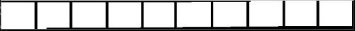
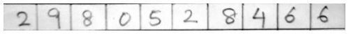
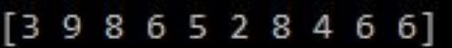

Handwritten Digit Recognizer
- Part 1
- My aim was to train all models with dataset and find the best model amongst them.
- To achieve my objective, I used the MNIST Dataset and pickled the trained model for future reference.
- On comparing their accuracy, I found MLPClassifier() perform the best among them.
- Part 2
- The test data were numbers written inside a grid. The numbers had to be extracted before predicting them.
- To extract the numbers, I used Opencv Library. I tried to detect the horizontal and vertical lines, and crop the boxed image with numbers to form an image array.
- Part 3
- Finally, I convert each 28x28 image into 784 array, and input each array to the selected model to predict numnber between 0 to 9.
- Grid
-
 - Following result is observed:-
- Image of test data
-
 - Detection of digits
-
 - Link to Github: Handwritten_Digit_Recognizer